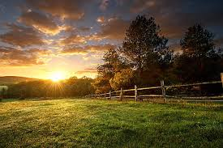

Venha conhecer o campo
Deixe para trás a correria da cidade e venha respirar o ar puro, sentir o cheiro da terra molhada e ouvir o canto dos pássaros ao amanhecer. No campo, cada detalhe é um convite ao bem-estar e à conexão com a natureza. Aqui, o tempo passa mais devagar, e a vida simples revela belezas que muitas vezes passam despercebidas.
Seja para um passeio tranquilo, uma aventura ao ar livre ou simplesmente para recarregar as energias, o campo te espera de braços abertos. Descubra trilhas, plantações, animais e paisagens que encantam os olhos e acalmam o coração.
